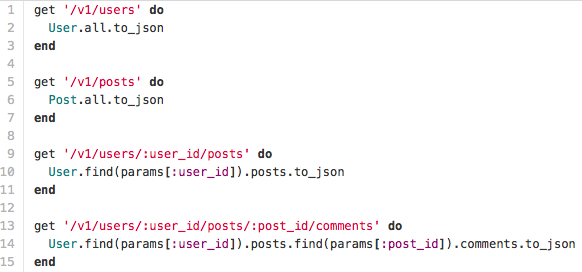
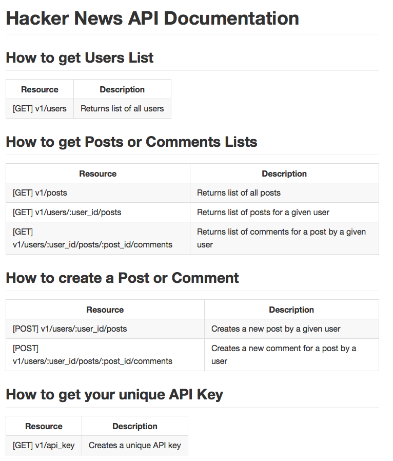

Background
It's almost been an entire week since I wrote something, but given today's topic, I thought I would take some time to explain it. Yesterday at DevBootCamp we were given an assignment to create a HackerNews API. I won't get into the specifics of how it works, but the idea is that you set up controllers that will query their database and bring out objects that are translated to json. Here are a few examples of a controller in our HackNews API.
The params on the last example come from the route set-up on the line before it.
Below is an image of the API routes and what each route does.(It is implied that each API route sends back a JSON object)
Consuming APIs
Now that we know how to setup APIs, lets try to "consume"/use them.